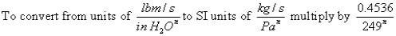

This airflow element allows you to directly enter the coefficients C and n for the mass flow version of the powerlaw model.
Name: Enter a unique name you want to use to identify the duct flow element. The element will be saved within the current project and can be associated with multiple duct segments.
Description: Field for entering a more detailed description of the specific duct flow element.
Flow Coefficient (C): The coefficients may only be expressed in SI units due to the conversion method used. Use the following conversion to convert from IP units to SI units.

Flow Exponent (n): Flow exponents vary from 0.5 for large openings where the flow is dominated by dynamic effects, and 1.0 for narrow openings dominated by viscous effects. Measurements usually indicate a flow exponent of 0.6 to 0.7 for typical infiltration openings.
Shape Size and Leakage: You must enter data to physically describe each duct airflow element. You input these values on the Shape Size and Leakage property page associated with each duct airflow element.